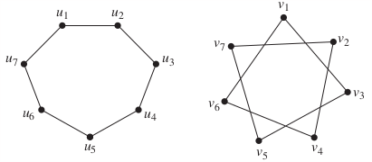

Section 10.3 Representing Graphs and Graph Isomorphism
p697: 35, 36, 37, 38, 39, 43
In Exercises 34–44 determine whether the given pair of graphs is isomorphic. Exhibit an isomorphism or provide a rigorous argument that none exists.
35. 
Solution
36. 
37. 
38. 
39. 
43.